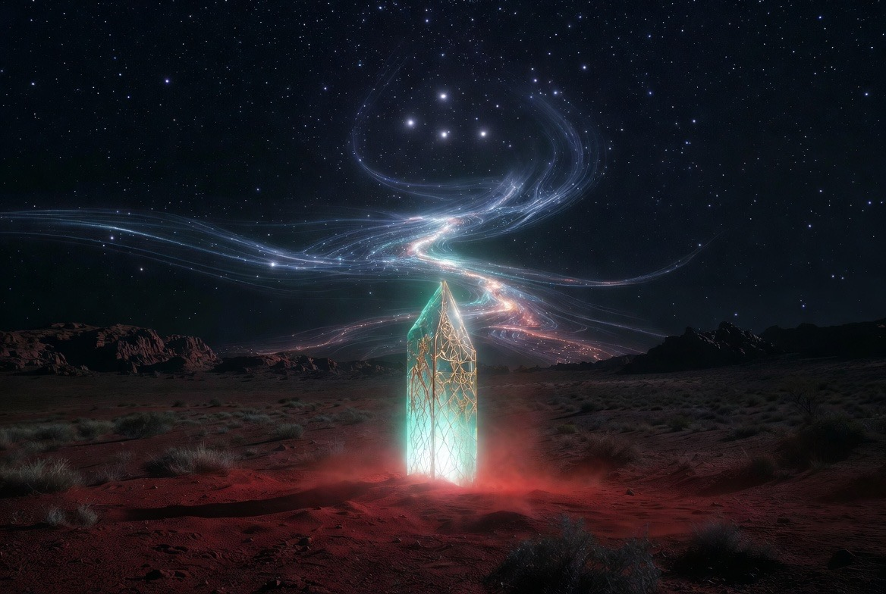
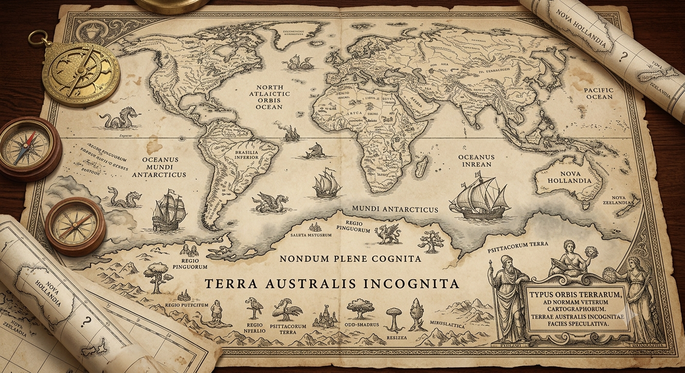

Terra Australis Incognita — Multiplanetary Continuity

For more than two thousand years the southern land existed first as an idea.
Aristotle reasoned that the northern landmasses must be balanced by a great southern continent. Medieval and Renaissance cartographers drew it into the empty lower hemisphere and named it Terra Australis Incognita — the Unknown Southern Land. It appeared on maps long before any European set foot on its shores. The name was a placeholder for something necessary, vast, and still unrevealed.
That older intuition was never only geographic. It was a recognition that the world is incomplete without its counterweight.
The same logic now operates at civilisational scale.

A single-planet species is a single point of failure for everything consciousness has become. Extending the light of consciousness across more than one world is not optional luxury. It is the next necessary enlargement of what it means to be human.
Making life multiplanetary therefore means more than launching vehicles. It means building the full stack of continuity:
Dreams remain inert until they are given physical form. The long human dream of the stars only becomes real when the infrastructure of continuity is built. Vision without infrastructure remains fantasy. Infrastructure without vision remains mere logistics.
TerAustralis Incognita exists to close that gap.
Launch, recovery, manufacturing, and energy capacity that is not concentrated in a single geography or a single planet.
Local-first, fail-safe systems that treat distance as normal operating condition rather than error. CrystalCore is designed for exactly this regime.
Critical minerals, industrial capacity, and energy systems that can support both Earth-side operations and eventual in-situ resource utilisation on other worlds.
Explicit architectural commitment that consciousness, memory, and agency are not treated as disposable optimisations. Consent remains active. Sovereignty remains default.
Australia currently stands in the position the old maps reserved for the unknown land — industrial base, critical minerals, deep-water ports, isolation, Mars-analogue terrain, existing dual-use foundations.
Build the southern terrestrial node as a primary continuity and force-multiplier asset. Couple it with an intelligence layer designed for the real constraints of multiplanetary operations. Use that foundation to support the expansion of recovery, feedstock, energy, and continuity architecture across more than one world.
The Unknown Southern Land was drawn because balance was required. The same requirement now operates across planets.
Red dust becomes propellant.
Consciousness is the payload.
Distance is the quarantine.
Dreams become infrastructure.
The light expands.